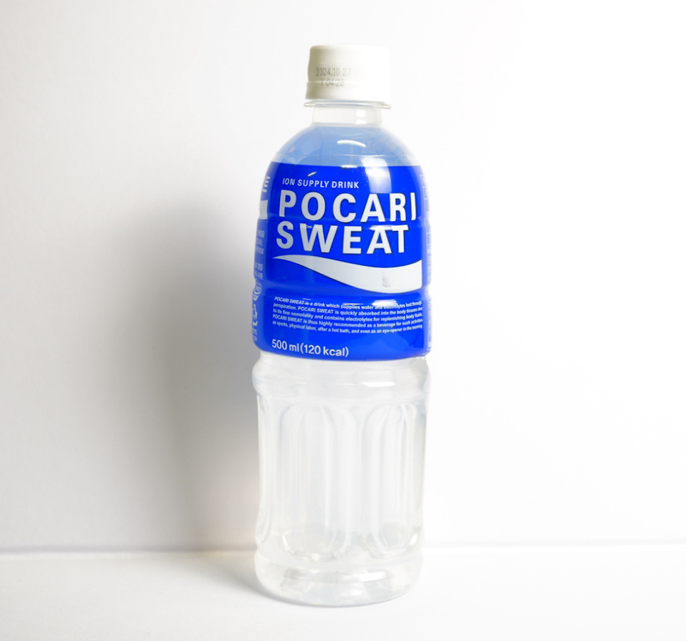

Pocari Sweat
Pocari Sweat is a Japanese sports drink introduced by Otsuka Pharmaceutical in 1980. It's designed to replenish electrolytes and fluids lost through sweating, making it popular for hydration during physical activity or hot weather. Known for its mild, slightly sweet citrus flavor, Pocari Sweat is marketed as a healthy beverage that mimics the natural balance of body fluids. Despite its unusual name, which combines "sweat" to emphasize hydration and replenishment, the drink has become an iconic and trusted brand in Japan and many other countries.